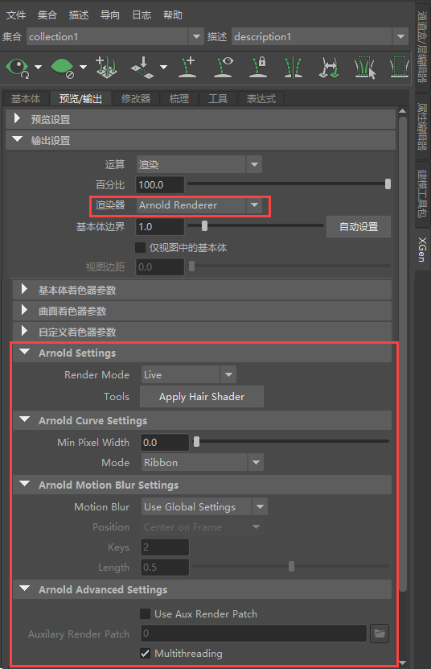
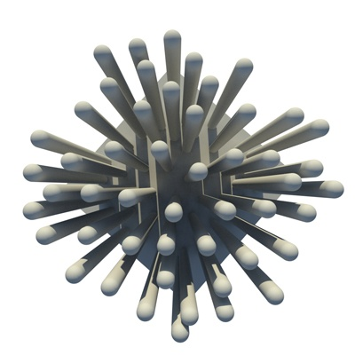
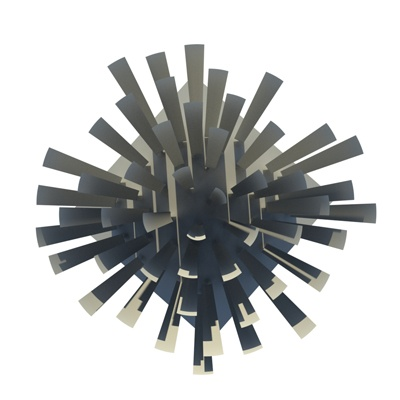
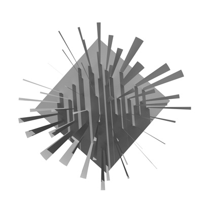
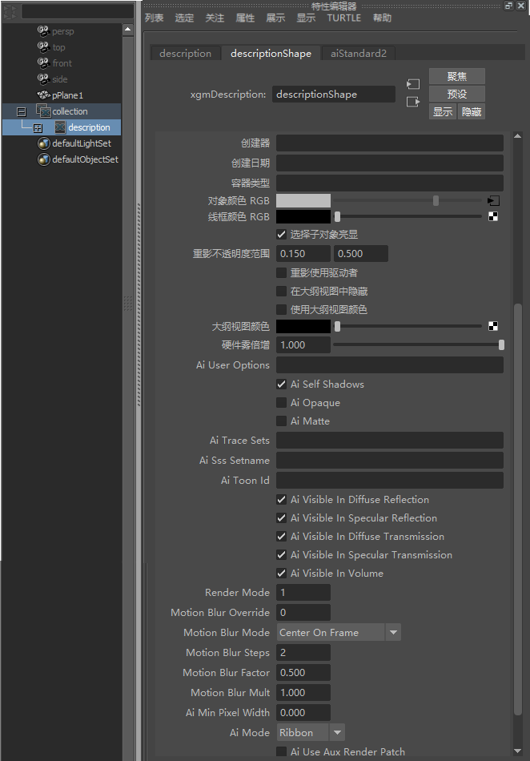
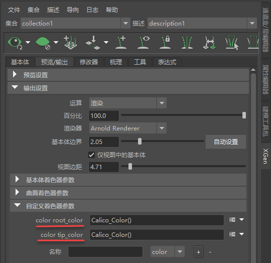
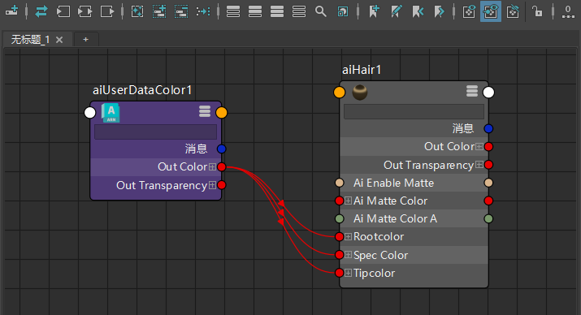
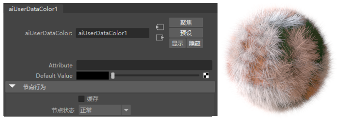
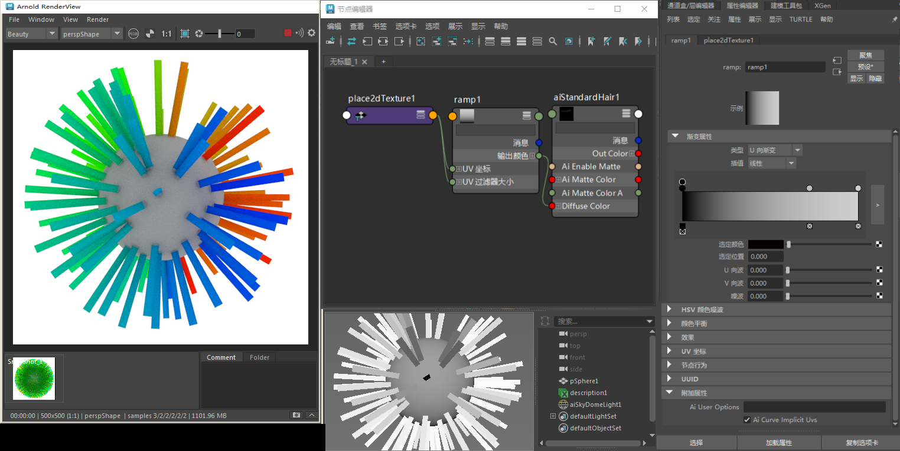

使用 XGen 渲染的头发（图片来源：Jonas Tornqvist）。
MtoA 支持 Maya 的 XGen。XGen 是一种强大的几何体实例化工具。目前将 XGen 与 MtoA 结合使用时存在一些限制。如下所述：
不支持基本体类型“卡片”(Card)。
确保在 XGen 插件之前加载 MtoA 插件，否则 Arnold 不会显示在“渲染器”(Renderer)列表中。
如果 XGen 样条线与 Arnold 渲染视图窗口中的视口匹配，请务必先保存场景。
显示 Arnold 输出设置：

“实时”(Live)允许 XGen 直接从 Maya 查询面片和导向动画。此模式不支持运动模糊，并将尝试重用预览生成的信息。
“批渲染”(Batch Render)模式将始终从文件读取几何体和动画。执行批渲染时，将始终启用批渲染模式。必须先将面片和导向动画导出到缓存。使用此模式可确保在执行批渲染前正确导出缓存。
将默认 Arnold XGen 头发着色器应用于当前描述。该着色器受 XGen 自定义着色器参数 root_color、tip_color 和 back_color 影响。
最小像素宽度(Min Pixel Width) - Arnold 的最小曲线像素宽度。在此处查看详细信息。
模式(Mode) - 曲线基本体可以渲染为带状或有厚度模式。要获得不朝向摄影机的“定向”样条线，必须禁用“XGen 基本体”(XGen Primitives)选项卡中的“朝向摄影机”(Face Camera)。
|  |  |  |
| 有厚度 | 带状 | 定向 |
在以下选项之间进行选择：“全局设置”(Global Settings)（使用 MtoA 运动模糊渲染设置）、“启用”(On)或“禁用”(Off)。
运动模糊和样条线
使用 XGen 样条线渲染运动模糊时，必须采用以下步骤，这一点非常重要。
使用“导出面片以进行批渲染”(Export Patches for Batch render)时，XGen 将创建一个 .abc 文件，该文件与场景存储在同一文件夹中。“使用辅助渲染面片”(Use Aux Render Patch)允许您显式选择要使用的文件，例如，先前导出的 .abc 文件。
启用/禁用“辅助渲染面片”(Auxiliary Render Patch)。
用于导出的 .abc 文件的文件路径。
要更改 XGen 样条线的“不透明度”(Opacity)，您必须先选择 XGen 描述，然后在属性编辑器的“附加属性”(Extra Attributes)中禁用“Ai 不透明”(Ai Opaque)。

要从 XGen 样条线获取颜色信息（例如，在 XGen 预设中找到的信息），您需要添加以下步骤。

将着色器指定给 XGen 描述。
将 aiUserDataColor 着色器连接到要使用的着色器的颜色属性（例如，根颜色）。

aiUserDataColor 着色器连接到 standard_hair 属性

使用 aiUserDataColor 渲染的 XGen 头发颜色
可以在渐变的“附加属性”(Extra Attributes)中启用曲线上的隐式 UV (root-to-tip)。

当禁用“曲线隐式 UV”(CurveImplicit UVs)时，渐变将应用于实际 UV 坐标
“XGen 样条线”中支持 UV。这是一个 XGen 形状（在 Maya 2017 中提供），位于“生成 -> 创建交互式修饰样条线”(Generate -> Create Interactive Groom Splines)中。